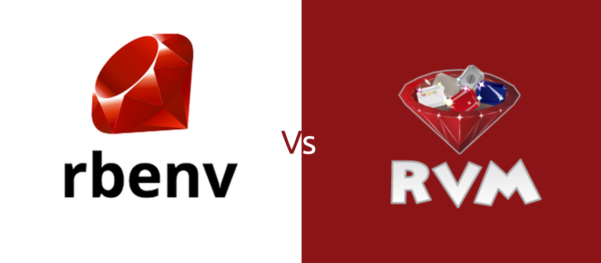

@(工作笔记)
rvm-record

[TOC]
RVM 安装
brew install gnupg
官方使用的是 gpg2
# gpg2 --recv-keys 409B6B1796C275462A1703113804BB82D39DC0E3 7D2BAF1CF37B13E2069D6956105BD0E739499BDB
brew 安装完之后是 gpg , fuck
gpg --keyserver hkp://pool.sks-keyservers.net --recv-keys 409B6B1796C275462A1703113804BB82D39DC0E3 7D2BAF1CF37B13E2069D6956105BD0E739499BDB
curl -sSL https://rvm.io/mpapis.asc | gpg --import -
gpg: 签名建立于 四 3/26 05:58:42 2020 CST
gpg: 使用 RSA 密钥 7D2BAF1CF37B13E2069D6956105BD0E739499BDB
gpg: 无法检查签名：No public key
GPG signature verification failed for '/Users/stone/.rvm/archives/rvm-1.29.10.tgz' - 'https://github.com/rvm/rvm/releases/download/1.29.10/1.29.10.tar.gz.asc'! Try to install GPG v2 and then fetch the public key:
gpg --keyserver hkp://pool.sks-keyservers.net --recv-keys 409B6B1796C275462A1703113804BB82D39DC0E3 7D2BAF1CF37B13E2069D6956105BD0E739499BDB
or if it fails:
command curl -sSL https://rvm.io/mpapis.asc | gpg --import -
command curl -sSL https://rvm.io/pkuczynski.asc | gpg --import -
In case of further problems with validation please refer to https://rvm.io/rvm/security
# 不翻墙下不了 蛋疼
# \curl -sSL https://get.rvm.io | bash -s stable
# 得配置 proxychains-ng
# https://www.hi-linux.com/posts/48321.html
pc \curl -sSL https://get.rvm.io | bash -s stable
修改 RVM 的 Ruby 安装源到 Ruby China 的 Ruby 镜像服务器，这样能提高安装速度
$ echo "ruby_url=https://cache.ruby-china.com/pub/ruby" > ~/.rvm/user/db
Ruby 的安装与切换
列出已知的 Ruby 版本
rvm list known
安装一个 Ruby 版本
rvm install 2.6.5 --disable-binary
切换 Ruby 版本
rvm use 2.6.5
如果想设置为默认版本，这样一来以后新打开的控制台默认的 Ruby 就是这个版本
rvm use 2.6.5 --default
查询已经安装的 ruby
rvm list
卸载一个已安装版本
rvm remove 1.8.7
gemset 的使用
RVM 不仅可以提供一个多 Ruby 版本共存的环境，还可以根据项目管理不同的 gemset.
gemset 可以理解为是一个独立的虚拟 Gem 环境，每一个 gemset 都是相互独立的。
比如你有两个项目，一个是 Rails 2.3 一个是 rails3. gemset 可以帮你便捷的建立两套 Gem 开发环境，并且方便的切换。
gemset 是附加在 Ruby 语言版本下面的，例如你用了 1.9.2, 建立了一个叫 rails3 的 gemset,当切换到 1.8.7 的时候，rails3 这个 gemset 并不存在。
建立 gemset
rvm use 1.8.7
rvm gemset create rails23
然后可以设定已建立的 gemset 做为当前环境
use 可以用来切换语言或者 gemset
前提是他们已经被安装 (或者建立)。并可以在 list 命令中看到。
rvm use 1.8.7
rvm use 1.8.7@rails23
然后所有安装的 Gem 都是安装在这个 gemset 之下。
列出当前 Ruby 的 gemset
rvm gemset list
清空 gemset 中的 Gem
如果你想清空一个 gemset 的所有 Gem, 想重新安装所有 Gem，可以这样
rvm gemset empty 1.8.7@rails23
删除一个 gemset
rvm gemset delete rails2-3
项目自动加载 gemset
RVM 还可以自动加载 gemset。 例如我们有一个 Rails 3.1.3 项目，需要 1.9.3 版本 Ruby，整个流程可以这样。
rvm install 1.9.3
rvm use 1.9.3
rvm gemset create rails313
rvm use 1.9.3@rails313
下面进入到项目目录，建立一个 .rvmrc 文件。
在这个文件里可以很简单的加一个命令：
rvm use 1.9.3@rails313
然后无论你当前 Ruby 设置是什么，cd 到这个项目的时候，RVM 会帮你加载 Ruby 1.9.3 和 rails313 gemset.
https://ruby-china.org/wiki/rvm-guide
rvm gemset管理
创建一个新的gemset
rvm gemset create xxxxx(gemset名称)
# 一般我会用类似ruby2.2.4-rails5.0.0.beta1来命名.这样可以清楚哪个ruby版本用哪个gemset
切换gemset
rvm gemset use ruby2.2.4-rails5.0.0.beta1
设置默认gemset
rvm gemset use ruby2.2.4-rails5.0.0.beta1 --default
设置ruby版本以及gemset
rvm use 2.2.4@ruby2.2.4-rails5.0.0.beta1
设置默认ruby版本以及gemset
rvm use 2.2.4@ruby2.2.4-rails5.0.0.beta1 --default
RubyMine 设置RVM
https://www.jetbrains.com/help/ruby/ruby-gemsets.html
Cannot install Ruby versions < 2.4 because of openssl@1.1 dependency #1353
https://github.com/rbenv/ruby-build/issues/1353
RVM Ruby 版本管理器的删除
https://www.jianshu.com/p/aef65d0c03a4
更换GEM源 , 下载包时候用的
gem sources --add https://gems.ruby-china.com/ --remove https://rubygems.org/
更换RVM源 , 下载ruby时候用的
echo "ruby_url=https://cache.ruby-china.com/pub/ruby" > ~/.rvm/user/db
你可以用 Bundler 的 Gem 源代码镜像命令。
$ bundle config mirror.https://rubygems.org https://gems.ruby-china.com
这样你不用改你的 Gemfile 的 source。
source 'https://rubygems.org/'
gem 'rails', '4.2.5'
...
Stack Level too deep (SystemStackError)
Your Rails version is quite old,Ruby 2.5 supportRails 4.2.8+, the current stable is Rails 5.2.
upgrade it with gem upgrade rails
https://github.com/rails/rails/issues/33062
openssl1.1 限制了 ruby 2.5 版本 , 因为是 2.5 版本 又限制了 Rails 4.2.8+版本 蛋疼… 以前的版本都废了...
openssl1.1是万恶之源, python也有这毛病
rails 版本管理可真混乱…
2.5.7 && 4.2.8 && gem 'sqlite3', '~> 1.3.11'
https://stackoverflow.com/questions/54653687/specified-sqlite3-gem-not-loaded
It is very strange but two weeks ago I also got the same issue, and when I initiate my rails new project it put gem 'sqlite3' without any version number, and I get the same error. So I played a lot on brew so I thought it is an issue due to that playing with SQLite, somehow I came to know that maybe my Sqlite3 gem has an issue. And I noticed it is loading 1.4 version of it.
I did following change and it worked.
gem 'sqlite3', '~> 1.3.11'
Just in case if someone searching answer of this question, as it resolved issue of question asker.
这很奇怪，但是两周前我也遇到了同样的问题，当我启动我的rails new project时，它把gem'sqlite3'没有任何版本号，并且得到了同样的错误。 所以我在brew上玩了很多游戏，所以我认为这是一个问题，原因是与SQLite一起玩，所以我才知道Sqlite3 gem可能有问题。 而且我注意到它正在加载1.4版本。
我做了下面的更改，它起作用了。
gem 'sqlite3', '~> 1.3.11'
以防万一有人搜索此问题的答案，以解决问题提问者的问题。
妈个屁 真蛋疼...
rails 4.2 开始 ip绑定 0.0.0.0 无效了… 蛋疼
https://stackoverflow.com/questions/29083885/what-does-binding-a-rails-server-to-0-0-0-0-buy-you
绑定到0.0.0.0告诉服务绑定到计算机上的所有IP地址。Rails服务器默认情况下会执行此操作，但是4.2更改为仅绑定到localhost。
基本上，如果它只是势必localhost那么它只会在本地回应要么localhost或127.0.0.1无法通过DNS服务工作，因为它不是一个公网IP地址。
使用时0.0.0.0，它将绑定到localhost 和可路由的IP地址。